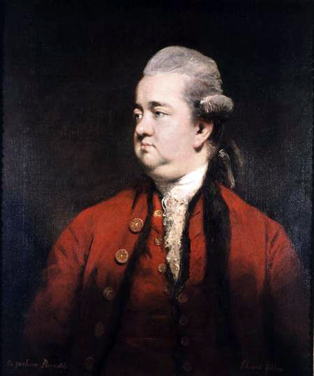

1750s |
HOME PAGE |
Edward Gibbon was an English essayist, politician, and historian who lived from 1737 to 1794. His most famous work is The History of the Decline and Fall of the Roman Empire. Gibbon's work is printed in six volumes and covers the Roman Empire from 98 to 1590.
